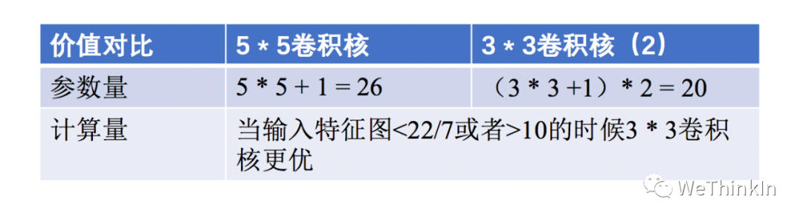
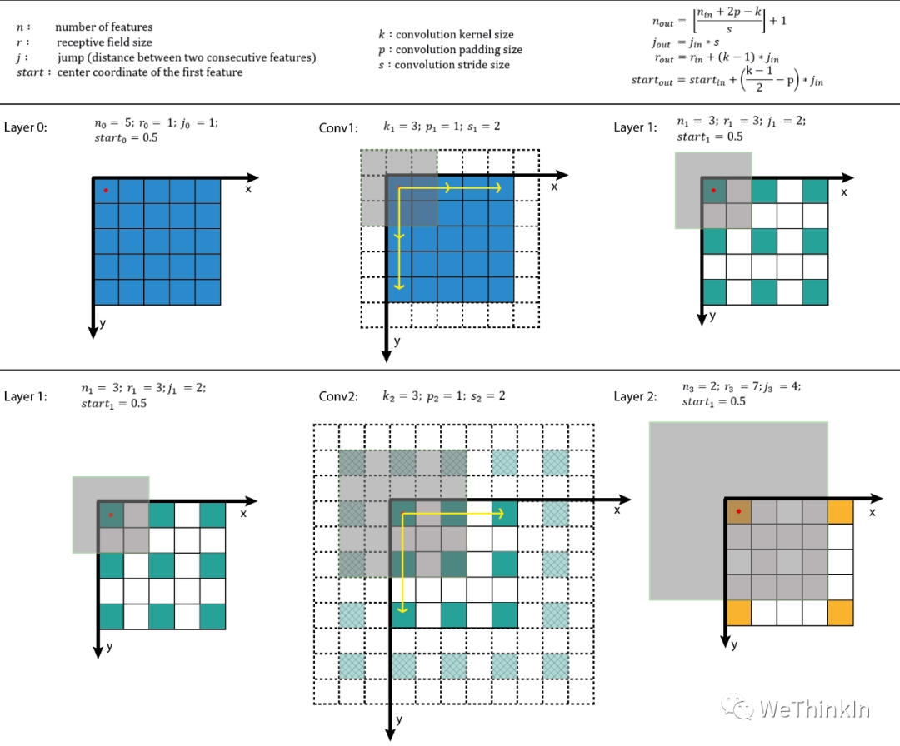
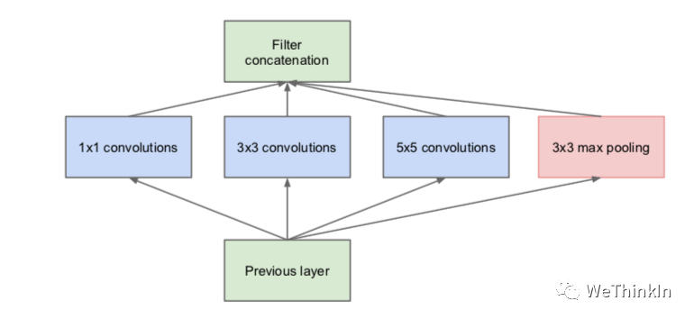
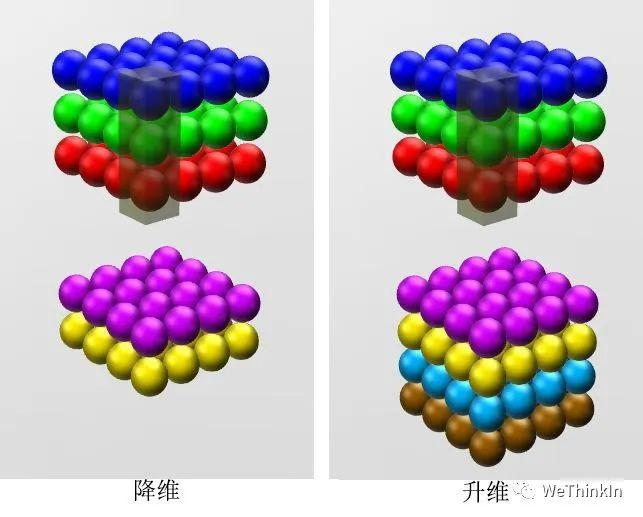
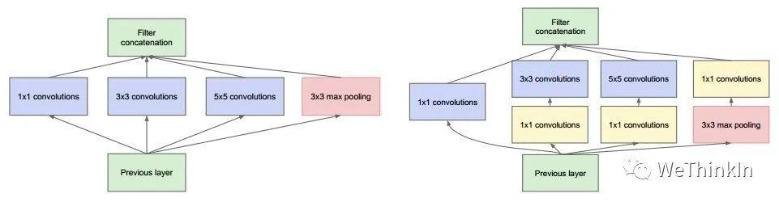
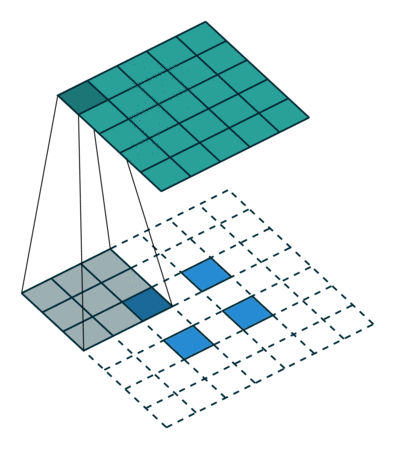
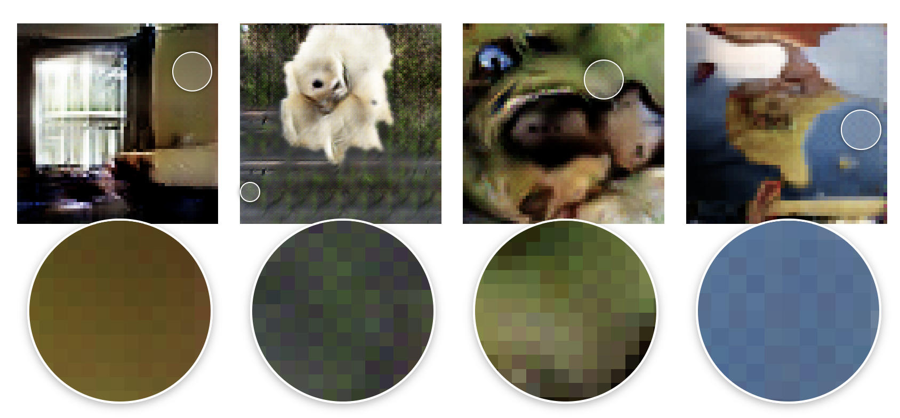
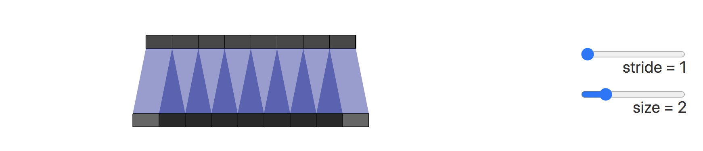
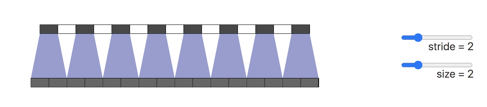

卷积层知识点
created: 2025-01-25T00:41 updated: 2025-01-25T13:23
目录
- 1.卷积有什么特点
- 2.不同层次的卷积都提取什么类型的特征
- 3.卷积核大小如何选取
- 4.卷积感受野的相关概念
- 5.网络每一层是否只能用一种尺寸的卷积核
- 6.1*1卷积的作用
- 7.转置卷积的作用
- 8.空洞卷积的作用
- 9.什么是转置卷积的棋盘效应
- 10.什么是有效感受野
- 11.分组卷积的相关知识
- 12.什么是可变形卷积？
- 13.什么是3D卷积？
1.卷积有什么特点
卷积主要有三大特点：
-
局部连接。比起全连接，局部连接会大大减少网络的参数。在二维图像中，局部像素的关联性很强，设计局部连接保证了卷积网络对图像局部特征的强响应能力。
-
权值共享。参数共享也能减少整体参数量，增强了网络训练的效率。一个卷积核的参数权重被整张图片共享，不会因为图像内位置的不同而改变卷积核内的参数权重。
-
下采样。下采样能逐渐降低图像分辨率，实现了数据的降维，并使浅层的局部特征组合成为深层的特征。下采样还能使计算资源耗费变少，加速模型训练，也能有效控制过拟合。
2.不同层次的卷积都提取什么类型的特征
-
浅层卷积 $\rightarrow$ 提取边缘特征
-
中层卷积 $\rightarrow$ 提取局部特征
-
深层卷积 $\rightarrow$ 提取全局特征
3.卷积核大小如何选取
最常用的是 $3\times3$ 大小的卷积核，两个 $3\times3$ 卷积核和一个 $5\times5$ 卷积核的感受野相同，但是减少了参数量和计算量，加快了模型训练。与此同时由于卷积核的增加，模型的非线性表达能力大大增强。

不过大卷积核（ $7\times7， 9\times9$ ）也有使用的空间，在GAN，图像超分辨率，图像融合等领域依然有较多的应用，大家可按需切入感兴趣的领域查看相关论文。
4.卷积感受野的相关概念
目标检测和目标跟踪很多模型都会用到RPN层，anchor是RPN层的基础，而感受野（receptive field，RF）是anchor的基础。
感受野的作用：
-
一般来说感受野越大越好，比如分类任务中最后卷积层的感受野要大于输入图像。
-
感受野足够大时，被忽略的信息就较少。
-
目标检测任务中设置anchor要对齐感受野，anchor太大或者偏离感受野会对性能产生一定的影响。
感受野计算：

增大感受野的方法：
-
使用空洞卷积
-
使用池化层
-
增大卷积核
5.网络每一层是否只能用一种尺寸的卷积核
常规的神经网络一般每层仅用一个尺寸的卷积核，但同一层的特征图可以分别使用多个不同尺寸的卷积核，以获得不同尺度的特征，再把这些特征结合起来，得到的特征往往比使用单一尺寸卷积核的要好，如GoogLeNet 、Inception系列的网络，均是每层使用了多个不同的卷积核结构。如下图所示，输入的特征图在同一层分别经过 $1\times 1$ ， $3\times3$ 和 $5\times5$ 三种不同尺寸的卷积核，再将各自的特征图进行整合，得到的新特征可以看作不同感受野提取的特征组合，相比于单一尺寸卷积核会有更强的表达能力。

6.1*1卷积的作用
$1 * 1$ 卷积的作用主要有以下几点：
-
实现特征信息的交互与整合。
-
对特征图通道数进行升维和降维，降维时可以减少参数量。
-
$1*1$ 卷积+ 激活函数 $\rightarrow$ 增加非线性，提升网络表达能力。


$1 * 1$ 卷积首发于NIN（Network in Network），后续也在GoogLeNet和ResNet等网络中使用。感兴趣的朋友可追踪这些论文研读细节。
7.转置卷积的作用
转置卷积通过训练过程学习到最优的上采样方式，来代替传统的插值上采样方法，以提升图像分割，图像融合，GAN等特定任务的性能。
转置卷积并不是卷积的反向操作，从信息论的角度看，卷积运算是不可逆的。转置卷积可以将输出的特征图尺寸恢复卷积前的特征图尺寸，但不恢复原始数值。
转置卷积的计算公式：
我们设卷积核尺寸为 $K\times K$ ，输入特征图为 $i \times i$ 。
（1）当 $stride = 1，padding = 0$ 时：

输入特征图在进行转置卷积操作时相当于进行了 $padding = K - 1$ 的填充，接着再进行正常卷积转置之后的标准卷积运算。
输出特征图的尺寸 = $i + (K - 1)$
（2）当 $stride > 1，padding = 0$ 时：

输入特征图在进行转置卷积操作时相当于进行了 $padding = K - 1$ 的填充，相邻元素间的空洞大小为 $stride - 1$ ，接着再进行正常卷积转置之后的标准卷积运算。
输出特征图的尺寸 = $stride * (i - 1) + K$
8.空洞卷积的作用
空洞卷积的作用是在不进行池化操作损失信息的情况下，增大感受野，让每个卷积输出都包含较大范围的信息。
空洞卷积有一个参数可以设置dilation rate，其在卷积核中填充dilation rate个0，因此，当设置不同dilation rate时，感受野就会不一样，也获取了多尺度信息。

(a) 图对应 $3\times3$ 的1-dilated conv，和普通的卷积操作一样。(b)图对应 $3\times3$ 的2-dilated conv，实际的卷积kernel size还是 $3\times3$ ，但是空洞为 $1$ ，也就是对于一个 $7\times7$ 的图像patch，只有$9$个红色的点和 $3\times3$ 的kernel发生卷积操作，其余的点的权重为 $0$ 。(c)图是4-dilated conv操作。
9.什么是转置卷积的棋盘效应

造成棋盘效应的原因是转置卷积的不均匀重叠（uneven overlap）。这种重叠会造成图像中某个部位的颜色比其他部位更深。
在下图展示了棋盘效应的形成过程，深色部分代表了不均匀重叠：

接下来我们将卷积步长改为2，可以看到输出图像上的所有像素从输入图像中接收到同样多的信息，它们都从输入图像中接收到一个像素的信息，这样就不存在转置卷带来的重叠区域。

我们也可以直接进行插值Resize操作，然后再进行卷积操作来消除棋盘效应。这种方式在超分辨率重建场景中比较常见。例如使用双线性插值和近邻插值等方法来进行上采样。
10.什么是有效感受野
感受野的相关知识在上面的第四节中中介绍过。
我们接着再看看有效感受野(effective receptive field, ERF)的相关知识。
一般而言，feature map上有效感受野要小于实际感受野。其有效性，以中心点为基准，类似高斯分布向边缘递减。
总的来说，感受野主要描述feature map中的最大信息量，有效感受野则主要描述信息的有效性。
11.分组卷积的相关知识
分组卷积（Group Convolution）最早出现在AlexNet网络中，分组卷积被用来切分网络，使其能在多个GPU上并行运行。

普通卷积进行运算的时候，如果输入feature map尺寸是 $C\times H \times W$ ，卷积核有N个，那么输出的feature map与卷积核的数量相同也是N个，每个卷积核的尺寸为 $C\times K \times K$ ，N个卷积核的总参数量为 $N \times C \times K \times K$ 。
分组卷积的主要对输入的feature map进行分组，然后每组分别进行卷积。如果输入feature map尺寸是 $C\times H \times W$ ，输出feature map的数量为 $N$ 个，如果我们设定要分成G个group，则每组的输入feature map数量为 $\frac{C}{G}$ ，则每组的输出feature map数量为 $\frac{N}{G}$ ，每个卷积核的尺寸为 $\frac{C}{G} \times K \times K$ ，卷积核的总数仍为N个，每组的卷积核数量为 $\frac{N}{G}$ ，卷积核只与其同组的输入map进行卷积，卷积核的总参数量为 $N \times \frac{C}{G} \times K \times K$ ，易得总的参数量减少为原来的 $\frac{1}{G}$ 。
分组卷积的作用:
-
分组卷积可以减少参数量。
-
分组卷积可以看成是稀疏操作，有时可以在较少参数量的情况下获得更好的效果（相当于正则化操作）。
-
当分组数量等于输入feature map通道数量，输出feature map数量也等于输入feature map数量时，分组卷积就成了Depthwise卷积，可以使参数量进一步缩减。
12.什么是可变形卷积？
可变形卷积（Deformable Convolution）是一种改进传统卷积神经网络（CNN）能力的新型卷积方法，旨在解决CNN在建模几何变换方面的固有限制。传统的卷积操作在固定的几何结构上进行采样，这使得它们在面对不同对象的尺度、姿态、视角和部分变形时表现不佳。
可变形卷积的工作原理
可变形卷积通过在标准卷积的采样网格位置上添加2D偏移量，使得卷积核能够在自由形式的采样位置上进行操作。这些偏移量通过前面的特征图生成，并通过额外的卷积层进行学习，从而使得变形是基于输入特征局部和自适应的。
如下图所示：
- 输入特征图（Input Feature Map）：传统卷积在输入特征图上以固定网格采样。
- 卷积核（Conv）：在标准卷积中，卷积核在特征图上滑动，生成输出特征图。
- 偏移场（Offset Field）：在可变形卷积中，偏移量由前一层特征图生成，并与卷积核一起应用于输入特征图。
- 输出特征图（Output Feature Map）：最终生成的输出特征图具有更强的适应性，能够更好地捕捉图像中的几何变换。


标准卷积(a)和可变形卷积(b)中固定感受野和自适应感受野的示意图如上图所示。
13.什么是3D卷积？
3D卷积（3D Convolution）是一种用于处理三维数据的卷积运算。与我们常见的2D卷积不同，3D卷积不仅在图像的宽和高两个空间维度上滑动，还在第三个维度上滑动，通常是时间或深度维度。因此，3D卷积通常用于处理如视频、医学影像（如MRI或CT扫描）或任何具有时间、深度信息的三维数据。
3D卷积的基本原理
要理解3D卷积的原理，我们可以从2D卷积入手。假设我们有一个2D卷积核（kernel），它在图像上滑动，生成一个特征图（Feature Map）。这个过程可以类比为在图片上用滤镜移动，提取特定的特征，例如边缘、纹理等。
现在，想象一下，我们不仅在图像的宽度和高度方向滑动卷积核，还在第三个维度上滑动，这个维度可以是时间（如视频中的帧）、深度（如CT扫描中的层）、或者颜色通道的组合。
3D卷积的过程
-
输入数据：
- 3D卷积的输入通常是一个三维特征，例如一个视频可以表示为
(帧数, 高度, 宽度)，或一个立体图像（如3D医疗图像）表示为(深度, 高度, 宽度)。
- 3D卷积的输入通常是一个三维特征，例如一个视频可以表示为
-
卷积核（Filter/Kernels）：
- 3D卷积核是一个三维的小块。例如，一个 $3\times3\times3$ 的卷积核在三个维度上分别有3个单元。
- 卷积核在输入数据的三个维度上滑动，在每一个位置进行点积运算（每个元素相乘再整体相加），生成一个输出值。
-
输出特征图：
- 输出特征也是一个三维特征图，它记录了卷积核在输入数据上每个位置滑动时的运算结果。输出的深度由输入数据的深度和卷积核的深度决定。
类比：用模具制作巧克力
想象一下，我们在制作巧克力，模具就是我们的卷积核。我们有一个厚厚的巧克力板（3D输入数据），你要在这块板上用模具压出不同形状的巧克力（输出特征图）。
-
2D卷积：就像在一块平面的巧克力上用模具压出形状，我们只能在平面上移动模具（左右、上下），每次我们都会得到一个平面巧克力的形状。
-
3D卷积：现在我们不仅可以在平面上移动模具，还可以把模具往巧克力的厚度方向压进去。这样，我们每次压出的是一个立体的巧克力块。这块立体巧克力反映了我们在厚度方向（如时间、深度）上也进行了一次处理。
3D卷积的应用场景
-
AI视频领域：
- 在AI视频领域中，3D卷积的作用非常明显，Sora、CogVideoX等主流AI视频大模型中都用到了3D卷积。视频数据通常是多个连续的帧序列，通过在时间维度上进行卷积，AI视频模型可以捕捉到动作的动态特征。
-
医学影像：
- 在医学影像中，如MRI或CT扫描，3D卷积可以在扫描的多个切片上滑动，以捕捉人体内部结构的三维特征，这对于诊断和分析非常重要。
-
人体姿态估计：
- 3D卷积可以用于从多帧图像中提取人体的姿态，帮助模型理解姿态变化和动作。
3D卷积的计算公式
3D卷积的输入通常是一个四维张量，形状为 (D, H, W, C)，其中：
D是深度（例如视频中的帧数或医学图像中的切片数）。H是高度。W是宽度。C是通道数（例如，RGB图像的通道数为3）。
假设我们有一个输入张量 X，其形状为 (D_in, H_in, W_in, C_in)，其中 C_in 是输入的通道数。我们还有一个卷积核 W，其形状为 (D_k, H_k, W_k, C_in, C_out)，其中 C_out 是输出的通道数。
计算过程步骤如下：
-
滑动卷积核：
- 卷积核
W在输入张量X上按步长（stride）滑动。在每个位置，卷积核的每个元素与对应位置的输入数据相乘，并将这些乘积相加得到一个输出值。
- 卷积核
-
点积运算：
-
在每个滑动位置，对输入张量与卷积核进行点积运算。具体地，对于某个位置
(i, j, k)的输出值，计算公式为：$$Y(i, j, k, m) = \sum_{d=0}^{D_k-1} \sum_{h=0}^{H_k-1} \sum_{w=0}^{W_k-1} \sum_{c=0}^{C_in-1} X(i+d, j+h, k+w, c) \cdot W(d, h, w, c, m)$$
其中：
Y(i, j, k, m)是输出张量在位置(i, j, k)和通道m上的值。X(i+d, j+h, k+w, c)是输入张量X在位置(i+d, j+h, k+w)和通道c上的值。W(d, h, w, c, m)是卷积核W在位置(d, h, w)和输入通道c、输出通道m上的权重。
-
-
应用偏置：
-
对于每个输出通道，可以添加一个偏置
b[m]，使得最终的输出为：$$Y(i, j, k, m) = Y(i, j, k, m) + b[m]$$
-
-
输出张量：
- 经过上述操作后，得到的输出张量
Y的形状为(D_out, H_out, W_out, C_out)，其中D_out、H_out和W_out分别是深度、高度和宽度方向上的输出尺寸。
- 经过上述操作后，得到的输出张量
举例说明:
假设我们有一个输入张量 X，其形状为 (4, 4, 4, 1)，即深度、高度、宽度均为4，且有一个输入通道。我们有一个卷积核 W，其形状为 (2, 2, 2, 1, 1)，即大小为2x2x2的立方体卷积核，有1个输入通道和1个输出通道。步长为1，无填充（padding）。
-
卷积核在输入张量上滑动：
- 卷积核首先覆盖输入张量的前2x2x2部分，与这部分的输入数据进行点积运算，得到一个输出值。
- 然后，卷积核滑动到下一个位置，重复上述过程，直到覆盖所有可能的位置。
-
计算每个位置的输出：
-
例如，对于第一个位置（顶点）上的输出值，计算公式为：
$$Y(0, 0, 0, 0) = X(0, 0, 0, 0) \cdot W(0, 0, 0, 0, 0) + X(0, 0, 1, 0) \cdot W(0, 0, 1, 0, 0) + \ldots + X(1, 1, 1, 0) \cdot W(1, 1, 1, 0, 0)$$
-
-
得到最终输出：
- 经过所有位置的计算后，得到的输出张量
Y的形状为(3, 3, 3, 1)。
- 经过所有位置的计算后，得到的输出张量
3D卷积的优缺点
优点：
- 能够捕捉到输入数据的三维特征，尤其适合处理视频数据和3D图像数据。
- 能够捕捉时间维度（或深度维度）的变化，适用于动态特征提取。
缺点：
- 计算复杂度更高，训练时间更长。
- 需要更多的内存和计算资源。